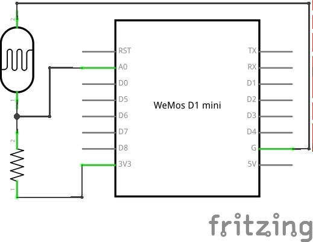

Advanced¶
Analog to Digital Converter¶
Our board has only one “analog” pin, A0. That pin is connected to an ADC,
or “analog to digital converter” – basically an electronic voltmeter, which
can tell you what voltage is on the pin. The one we have can only measure from
0 to 1V, and would be damaged if it got more than 1V, so we have to be careful.
We will connect a photo-resistor to it. It’s a special kind of a resistor that changes its resistance depending on how much light shines on it. But to make this work, we will need a second, fixed, resistor to make a “volatge divider”. This way the voltage will change depending on the resistance of our photo-resistor.
Now, we will just read the values in our program, and print them in a loop:
from machine import ADC
adc = ADC(0)
while True:
print(adc.read())
You should see a column of numbers changing depending on how much light the photo-resistor has. Try to cover it or point it toward a window or lamp. The values are from 0 for 0V, to 1024 for 1V. Ours will be somewhere in between.
Communication Protocols¶
So far all devices we connected to the board were relatively simple and only required a single pin. More sophisticated devices are controlled with multiple pins, and often have very elaborate ways in which you have to change the pins to make them do something, like sending a character to them, or retrieving a value. Those ways are often standardized, and already implemented for you, so that you don’t have to care about all the gory details – you just call high-level commands, and the libraries and/or hardware in your board handles it all for you.
Among the most popular protocols are UART, I²C and SPI. We are going to have examples of each of them, but we are not going to get into details of how they work internally. It’s enough to know that they let you send bytes to the device, and receive bytes in response.